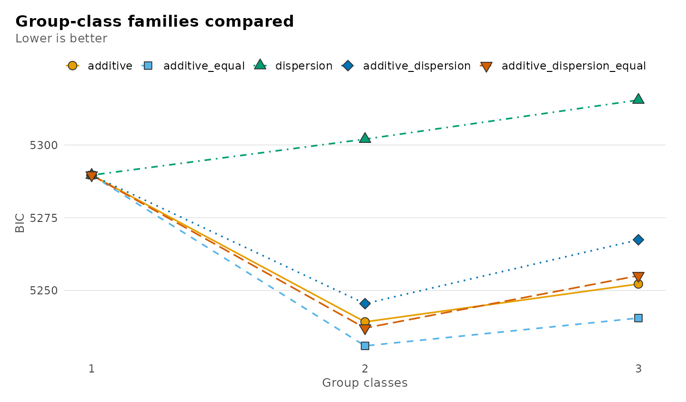
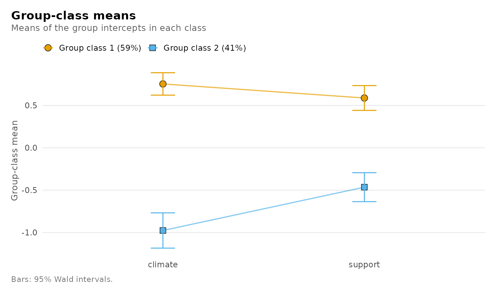
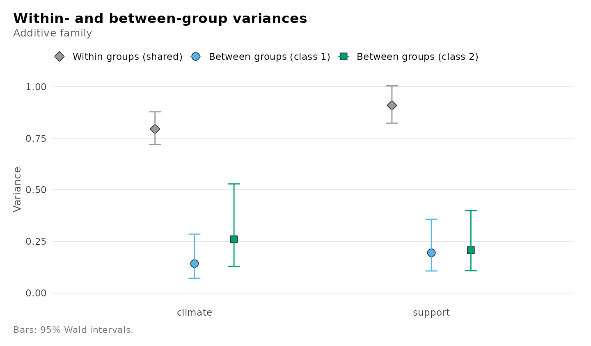
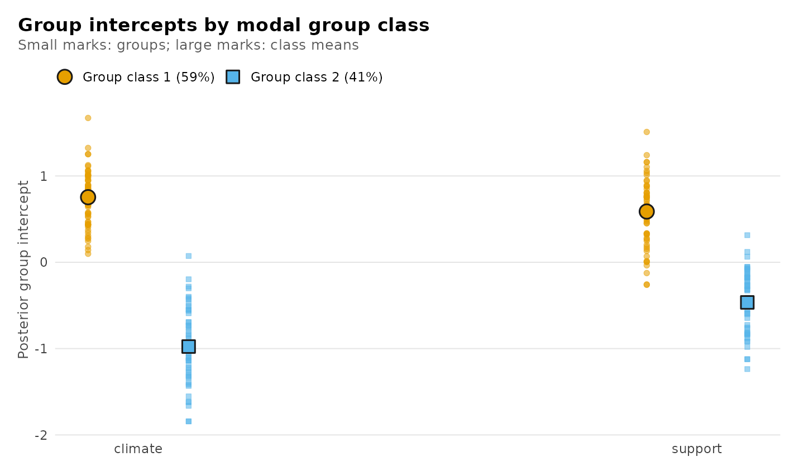
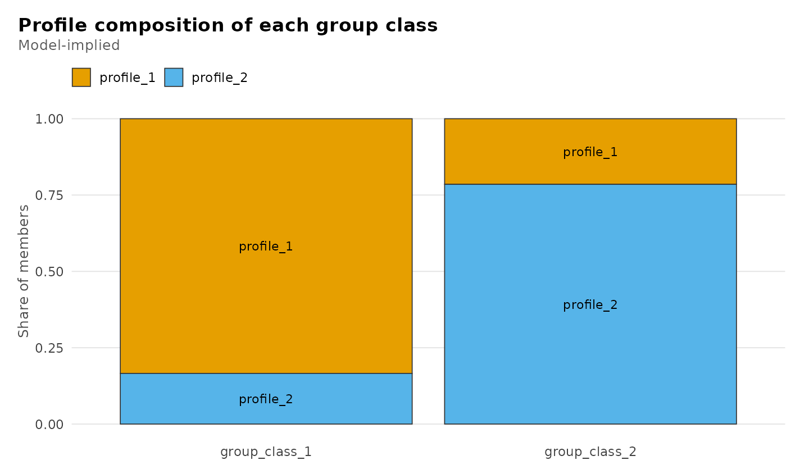

Group-class and cross-level models: classes of groups from raw ratings
Written by Mohammed Saqr and Sonsoles López-Pernas
Source:vignettes/articles/additive.Rmd
additive.RmdMembers of the same team, pupils of the same class or sessions of the same student give ratings that share something: the unit they belong to. The additive model of Houle, Morin and Harvey (2026) asks whether those units fall into a small number of latent group classes that differ in where their members’ ratings sit. It has no individual profiles: every member of a group belongs to the group’s class, and varies around the group’s own level.
The same machinery fits the other families of that framework: the dispersion family, whose group classes differ in how much members vary around their group, the additive-dispersion family, which allows both, and two cross-level families that estimate individual profiles and group classes together.
These families are experimental. Estimation, standard errors, tables, plots, enumeration and the bootstrap likelihood-ratio test are available; missing data and covariates are not yet.
The model
For group with members rating indicators, and group class :
Each group has its own intercept per indicator, drawn from its class’s distribution. The group classes differ in their means and, optionally, in the between-group spread ; the within-group variance is the same in every class. That shared within-group variance is what makes the model additive. The likelihood is exact: it is computed from each group’s size, mean and within-group scatter, with no numerical integration.
Data
The ratings below are simulated so that the truth is known: 120 teams of 4 to 12 members rate the team’s climate and the support they receive. Teams are of two types, supportive and strained, which differ in their average ratings and, for climate, in how much teams of the type vary.
library(latents)
set.seed(2026)
n_teams <- 120
team_type <- rep(c("supportive", "strained"), times = c(66, 54))
team_size <- rep(c(4, 6, 8, 12), length.out = n_teams)
team_climate <- rnorm(n_teams, ifelse(team_type == "supportive", 0.8, -0.8),
ifelse(team_type == "supportive", 0.35, 0.6))
team_support <- rnorm(n_teams, ifelse(team_type == "supportive", 0.6, -0.5), 0.45)
ratings <- data.frame(
team = rep(seq_len(n_teams), team_size),
type = rep(team_type, team_size),
climate = rep(team_climate, team_size) + rnorm(sum(team_size), 0, 0.9),
support = rep(team_support, team_size) + rnorm(sum(team_size), 0, 1))
str(ratings)
#> 'data.frame': 900 obs. of 4 variables:
#> $ team : int 1 1 1 1 2 2 2 2 2 2 ...
#> $ type : chr "supportive" "supportive" "supportive" "supportive" ...
#> $ climate: num 1.219 1.082 2.058 1.642 0.418 ...
#> $ support: num -0.623 1.729 0.945 0.236 1.262 ...The model never sees type; it is kept to check the
classification later.
Fitting
The additive model is a family of
multilpa(). It takes the ratings, the group column and the
number of group classes; there is no n_profiles, because
there are no individual profiles.
fit <- multilpa(ratings, c("climate", "support"), "team",
n_group_classes = 2, family = "additive", seed = 1)
fit
#> Additive group-class model (varying between variances)
#> 2 group classes, 120 groups, 900 observations, 2 indicators
#> log-likelihood -2593.282, 11 parameters, BIC (groups) 5239.226
#> converged: yes; best start replicated 8 of 10
#> Tables: get_results(x, what = ), e.g. "parameters", "group_classes", "groups", "intercepts"; summary(x); plot(x).How many group classes?
Fit one, two and three classes and compare them by BIC, which for
this family is penalized by the number of groups (nobs(fit)
is the number of teams).
fit_one <- multilpa(ratings, c("climate", "support"), "team",
n_group_classes = 1, family = "additive", seed = 1)
fit_three <- multilpa(ratings, c("climate", "support"), "team",
n_group_classes = 3, family = "additive", seed = 1)
#> Warning: A between-group variance is estimated at zero or a within-group variance reached
#> min_variance; this is a boundary fit and Wald inference does not apply.
BIC(fit_one, fit, fit_three)
#> df BIC
#> fit_one 6 5290
#> fit 11 5239
#> fit_three 16 5252Two classes have the lowest BIC. The three-class fit also warns that a between-group variance went to zero: with a third class there is no between-team spread left for some class to explain. A likelihood-ratio test of two against three classes would need a bootstrap reference distribution, not the chi-square, and that is not yet available for this family.
Do the classes differ in spread?
between_variance = "equal" constrains the between-group
variances to be equal across classes, which leaves the classes differing
in location only.
fit_equal <- multilpa(ratings, c("climate", "support"), "team",
n_group_classes = 2, family = "additive",
between_variance = "equal", seed = 1)
BIC(fit, fit_equal)
#> df BIC
#> fit 11 5239
#> fit_equal 9 5231
AIC(fit, fit_equal)
#> df AIC
#> fit 11 5209
#> fit_equal 9 5206Both criteria prefer the equal-spread model, although the data were simulated with more spread in climate among strained teams. With 120 teams that difference is too small to be told apart from sampling noise, which is what the criteria report. The rest of this vignette uses the varying model to show every parameter.
Comparing the group-class families
enumerate_classes() fits every combination of family,
between-variance restriction and number of group classes in one call.
The model column names each candidate for
candidate_fit().
grid <- enumerate_classes(ratings, c("climate", "support"), "team",
family = c("additive", "dispersion",
"additive_dispersion"),
n_group_classes = 1:3, seed = 1)
get_results(grid, "best")
#> model family between_variance n_group_classes log_likelihood n_parameters
#> 7 additive_equal additive equal 2 -2594 9
#> aic bic bic_individual entropy smallest_class min_effective_groups converged boundary
#> 7 5206 5231 5249 0.87 0.395 39.6 TRUE FALSE
#> n_best_replicated warnings error
#> 7 10 <NA>The lowest BIC belongs to two additive classes with equal between-group spread, the model chosen above. Adding class-specific within-group variances (additive-dispersion) does not improve the fit enough to pay for them, and the dispersion family, whose classes differ only in spread, fits much worse: these teams differ in level, not in how much their members disagree.
plot(grid)
Whether two classes are needed at all is a test of one class against
two. The likelihood-ratio statistic has no chi-square reference
distribution there, so bootstrap_lrt() simulates it from
the one-class fit:
one_class <- candidate_fit(grid, n_group_classes = 1, model = "additive_equal")
two_classes <- candidate_fit(grid, n_group_classes = 2, model = "additive_equal")
bootstrap_lrt(one_class, two_classes, iter = 19, n_starts = 3, seed = 1)
#> Parametric bootstrap likelihood-ratio comparison
#> Null: additive_equal, 1 group class; alternative: additive_equal, 2 group classes
#> Observed statistic: 73.015578
#> p-value: 0.05 (Monte Carlo SE 0.0487) from 19 of 19 valid replicatesWith 19 replicates the smallest attainable p-value is 0.05; use several hundred replicates for a report.
Parameters
Every parameter, with Wald standard errors from the observed information:
get_results(fit)
#> Warning: Group classes supported by fewer than 50 effective groups (group_class_2: 38.3
#> effective of 49.3 expected groups, 78% of the information kept). A small information
#> share means poor separation; a small expected count means few groups. Wald intervals for
#> class means and weights can be miscalibrated; see get_results(x, "group_classes").
#> level group_class indicator parameter estimate standard_error statistic
#> 1 between group_class_1 climate mean 0.754 0.0675 11.16
#> 2 between group_class_1 support mean 0.588 0.0747 7.87
#> 3 between group_class_2 climate mean -0.976 0.1063 -9.19
#> 4 between group_class_2 support mean -0.465 0.0872 -5.33
#> 5 within shared climate variance 0.795 0.0403 NA
#> 6 within shared support variance 0.909 0.0460 NA
#> 7 between group_class_1 climate variance 0.143 0.0505 NA
#> 8 between group_class_1 support variance 0.195 0.0601 NA
#> 9 between group_class_2 climate variance 0.260 0.0941 NA
#> 10 between group_class_2 support variance 0.208 0.0692 NA
#> 11 group_class group_class_1 <NA> weight 0.589 0.0509 NA
#> 12 group_class group_class_2 <NA> weight 0.411 0.0509 NA
#> p_value p_adjusted conf_low conf_high
#> 1 6.17e-29 6.17e-29 0.6216 0.886
#> 2 3.41e-15 3.41e-15 0.4416 0.734
#> 3 4.10e-20 4.10e-20 -1.1847 -0.768
#> 4 9.59e-08 9.59e-08 -0.6358 -0.294
#> 5 NA NA 0.7195 0.878
#> 6 NA NA 0.8229 1.003
#> 7 NA NA 0.0712 0.285
#> 8 NA NA 0.1067 0.357
#> 9 NA NA 0.1281 0.528
#> 10 NA NA 0.1082 0.399
#> 11 NA NA 0.4873 0.684
#> 12 NA NA 0.3156 0.513The warning comes from a check on each class’s effective
groups: the number of perfectly classified groups that would pin
down the class weight as precisely as this fit does. It is shown in the
group_classes table below. Here the strained class has
about 38 effective groups of the 49 it is expected to hold, so most of
the information survives the classification; the class is simply not
large. With fewer than 50 effective groups, the simulation study found
interval coverage for class parameters starting to fall below 95%, and
far below it when a class is also poorly separated.
level separates the three kinds of parameter:
"between" rows are the class means and between-group
variances, "within" rows the within-group variances shared
by the classes (group_class = "shared"), and
"group_class" rows the class weights. Intervals for
variances are formed on the log scale and for weights on the logit
scale, so they stay in range. Cluster-robust (sandwich) standard errors
over teams take one argument:
get_results(fit, "parameters", vcov_type = "robust")
#> Warning: Group classes supported by fewer than 50 effective groups (group_class_2: 38.5
#> effective of 49.3 expected groups, 78% of the information kept). A small information
#> share means poor separation; a small expected count means few groups. Wald intervals for
#> class means and weights can be miscalibrated; see get_results(x, "group_classes").
#> level group_class indicator parameter estimate standard_error statistic
#> 1 between group_class_1 climate mean 0.754 0.0627 12.03
#> 2 between group_class_1 support mean 0.588 0.0778 7.56
#> 3 between group_class_2 climate mean -0.976 0.1063 -9.18
#> 4 between group_class_2 support mean -0.465 0.0863 -5.39
#> 5 within shared climate variance 0.795 0.0437 NA
#> 6 within shared support variance 0.909 0.0488 NA
#> 7 between group_class_1 climate variance 0.143 0.0602 NA
#> 8 between group_class_1 support variance 0.195 0.0652 NA
#> 9 between group_class_2 climate variance 0.260 0.0744 NA
#> 10 between group_class_2 support variance 0.208 0.0532 NA
#> 11 group_class group_class_1 <NA> weight 0.589 0.0508 NA
#> 12 group_class group_class_2 <NA> weight 0.411 0.0508 NA
#> p_value p_adjusted conf_low conf_high
#> 1 2.48e-33 2.48e-33 0.6312 0.877
#> 2 4.08e-14 4.08e-14 0.4355 0.740
#> 3 4.19e-20 4.19e-20 -1.1847 -0.768
#> 4 7.20e-08 7.20e-08 -0.6342 -0.296
#> 5 NA NA 0.7135 0.885
#> 6 NA NA 0.8179 1.010
#> 7 NA NA 0.0623 0.326
#> 8 NA NA 0.1014 0.376
#> 9 NA NA 0.1486 0.456
#> 10 NA NA 0.1257 0.343
#> 11 NA NA 0.4876 0.684
#> 12 NA NA 0.3158 0.512Groups and their intercepts
Each team’s class probabilities, and its modal class:
head(get_results(fit, "groups"))
#> team n group_class posterior probability_group_class_1 probability_group_class_2
#> 1 1 4 group_class_1 1.000 1.000 0.000487
#> 2 2 6 group_class_1 0.999 0.999 0.000534
#> 3 3 8 group_class_1 1.000 1.000 0.000414
#> 4 4 12 group_class_1 0.999 0.999 0.000555
#> 5 5 4 group_class_1 0.976 0.976 0.024356
#> 6 6 6 group_class_1 0.988 0.988 0.012196
get_results(fit, "group_classes")
#> group_class weight count n_assigned mean_posterior effective_groups
#> 1 group_class_1 0.589 70.7 71 0.968 55.0
#> 2 group_class_2 0.411 49.3 49 0.960 38.3The posterior mean of each team’s intercept shrinks its observed average towards its class mean, more so for small teams; its variance includes the uncertainty about which class the team belongs to.
head(get_results(fit, "intercepts"))
#> team indicator n average intercept_mean intercept_variance
#> 1 1 climate 4 1.500 1.065 0.0832
#> 2 2 climate 6 0.383 0.561 0.0689
#> 3 3 climate 8 1.080 0.946 0.0586
#> 4 4 climate 12 0.768 0.763 0.0453
#> 5 5 climate 4 0.750 0.734 0.0971
#> 6 6 climate 6 -0.159 0.272 0.0751Because the teams were simulated, the classification can be checked against the true type:
get_results(fit, "recovery", data = ratings, truth = "type")
#> assigned truth n share
#> 1 group_class_1 strained 5 0.0704
#> 2 group_class_1 supportive 66 0.9296
#> 3 group_class_2 strained 49 1.0000
#> 4 group_class_2 supportive 0 0.0000Every supportive team is in one class; most strained teams are in the other, and the few placed with the supportive teams are those whose ratings happened to fall close to that class.
Plots
plot(fit)
#> Warning: Group classes supported by fewer than 50 effective groups (group_class_2: 38.3
#> effective of 49.3 expected groups, 78% of the information kept). A small information
#> share means poor separation; a small expected count means few groups. Wald intervals for
#> class means and weights can be miscalibrated; see get_results(x, "group_classes").
plot(fit, what = "variances")
#> Warning: Group classes supported by fewer than 50 effective groups (group_class_2: 38.3
#> effective of 49.3 expected groups, 78% of the information kept). A small information
#> share means poor separation; a small expected count means few groups. Wald intervals for
#> class means and weights can be miscalibrated; see get_results(x, "group_classes").
plot(fit, what = "intercepts")
#> Warning: Group classes supported by fewer than 50 effective groups (group_class_2: 38.3
#> effective of 49.3 expected groups, 78% of the information kept). A small information
#> share means poor separation; a small expected count means few groups. Wald intervals for
#> class means and weights can be miscalibrated; see get_results(x, "group_classes").
Cross-level families
When the same ratings define both individual profiles and group
classes, the cross-level families follow the manifest specification of
Houle et al. (2026): each group’s means of the indicators are the
group-level indicators of its class. In the full family, the
group classes also differ in how their members are distributed over the
individual profiles; in the restricted family they do not, and
the two levels are estimated separately. Here, sessions of
course_engagement form engagement profiles and students
form group classes.
activity <- c("browse", "lectures", "forum_read", "forum_post", "attendance")
full <- multilpa(course_engagement, activity, "student", n_profiles = 2,
n_group_classes = 2, family = "full_cross_level", seed = 1)
restricted <- multilpa(course_engagement, activity, "student", n_profiles = 2,
n_group_classes = 2, family = "restricted_cross_level",
seed = 1)
get_results(full, "composition")
#> group_class profile share
#> 1 group_class_1 profile_1 0.834
#> 2 group_class_2 profile_1 0.215
#> 3 group_class_1 profile_2 0.166
#> 4 group_class_2 profile_2 0.785
rbind(get_results(full, "fit"), get_results(restricted, "fit"))
#> family n_profiles n_group_classes log_likelihood n_parameters aic
#> 1 full_cross_level 2 2 -8512 43 17111
#> 2 restricted_cross_level 2 2 -8752 42 17588
#> bic bic_individual n_groups n_obs converged boundary
#> 1 17225 17337 106 1422 TRUE FALSE
#> 2 17700 17809 106 1422 TRUE FALSEIn the full model one class of students has most of its sessions in one profile and the other class mostly in the other, and letting the composition differ by class raises the likelihood far more than its one extra parameter costs. Because the group means are computed from the same ratings, these likelihoods compare cross-level fits of the same data only, not the group-class families above, and standard errors are not reported.
plot(full, what = "composition")
When the between-group variance is zero
In course_engagement the student types are discrete by
construction, so students of the same class do not differ in their
average activity: the between-group variance is zero. The fit says so,
and the tables report no standard errors, because a variance on the edge
of its space breaks the approximation Wald inference relies on.
activity <- c("browse", "lectures", "forum_read", "forum_post", "attendance")
fit_boundary <- multilpa(course_engagement, activity, "student",
n_group_classes = 3, family = "additive",
between_variance = "equal", seed = 1)
#> Warning: A between-group variance is estimated at zero or a within-group variance reached
#> min_variance; this is a boundary fit and Wald inference does not apply.
get_results(fit_boundary, "fit")
#> family between_variance n_group_classes log_likelihood n_parameters aic bic
#> 1 additive equal 3 -9392 27 18839 18911
#> bic_individual n_groups n_obs entropy smallest_class min_effective_groups converged
#> 1 18981 106 1422 0.907 0.3 NA TRUE
#> boundary kkt n_starts n_best_replicated
#> 1 TRUE TRUE 10 10Known limitations
A predeclared simulation study (1000 datasets per condition; the
report is in the package repository under
validation/ADDITIVE_SIMULATION.md) found:
- With a few hundred groups and well-separated classes, means, weights and variances are recovered and 95% intervals cover close to 95%.
- Between-group variances are estimated slightly low, the usual small-sample bias of maximum likelihood for a variance component; it shrinks as the number of groups grows.
- With heavy-tailed ratings, the observed-information standard errors
of the within-group variances are too small;
vcov_type = "robust"corrects them. With few groups (about 50), prefer the observed-information standard errors. - When one class is small and poorly separated from another, intervals
can be badly miscalibrated. The
latents_weak_classwarning (fewer than 50 effective groups in a class) flagged every such simulated dataset and under 1% of the well-separated ones with about 100 groups per class; it also flags designs with fewer than about 50 groups per class, where coverage was mildly low. - When a between-group variance may truly be zero, its Wald interval is not meaningful: either the fit is on the boundary and standard errors are withheld, or the interval excludes zero by construction.
References
Houle, S. A., Morin, A. J. S., & Harvey, J.-F. (2026). Multilevel latent profile analyses: A comprehensive guide. Organizational Research Methods. doi:10.1177/10944281261469432.